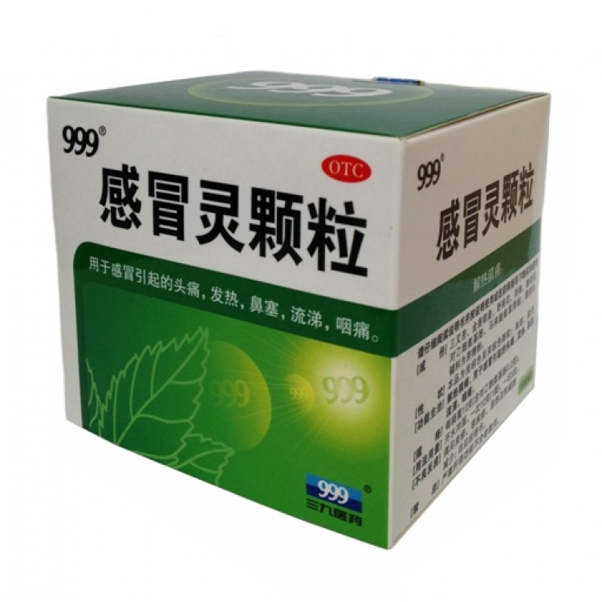
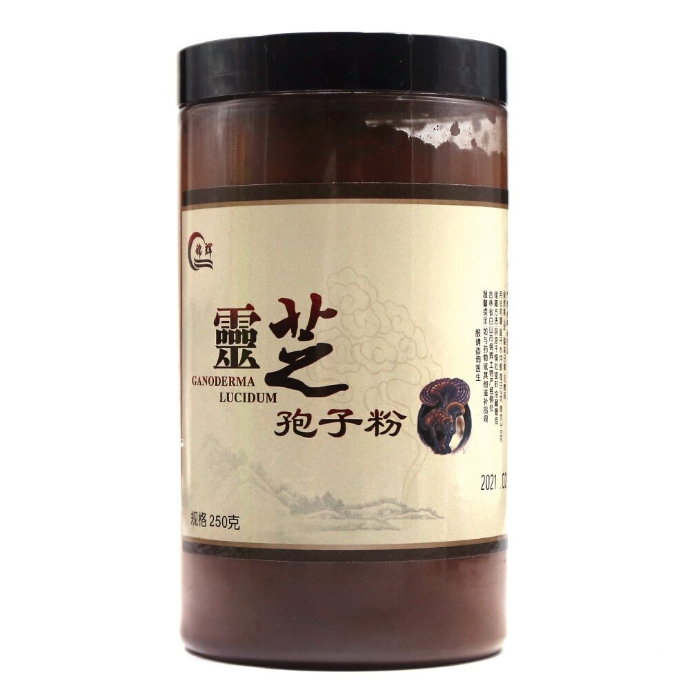
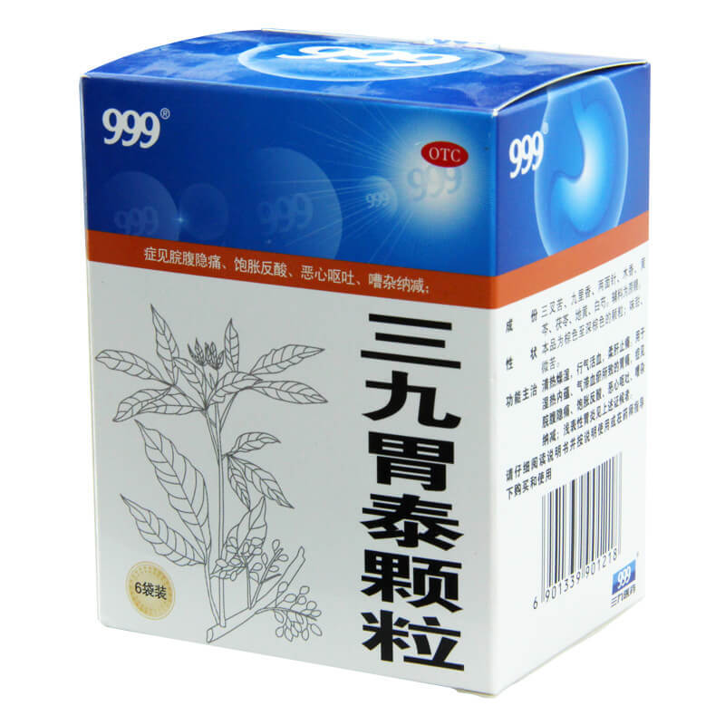
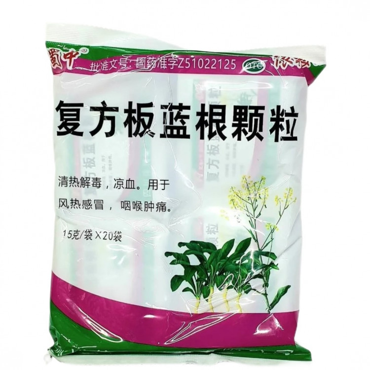
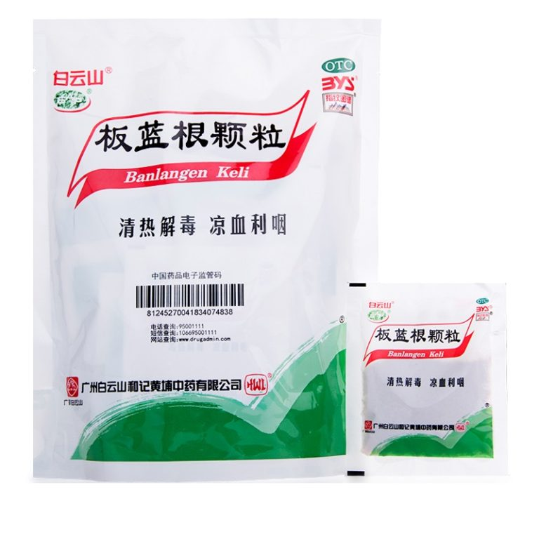
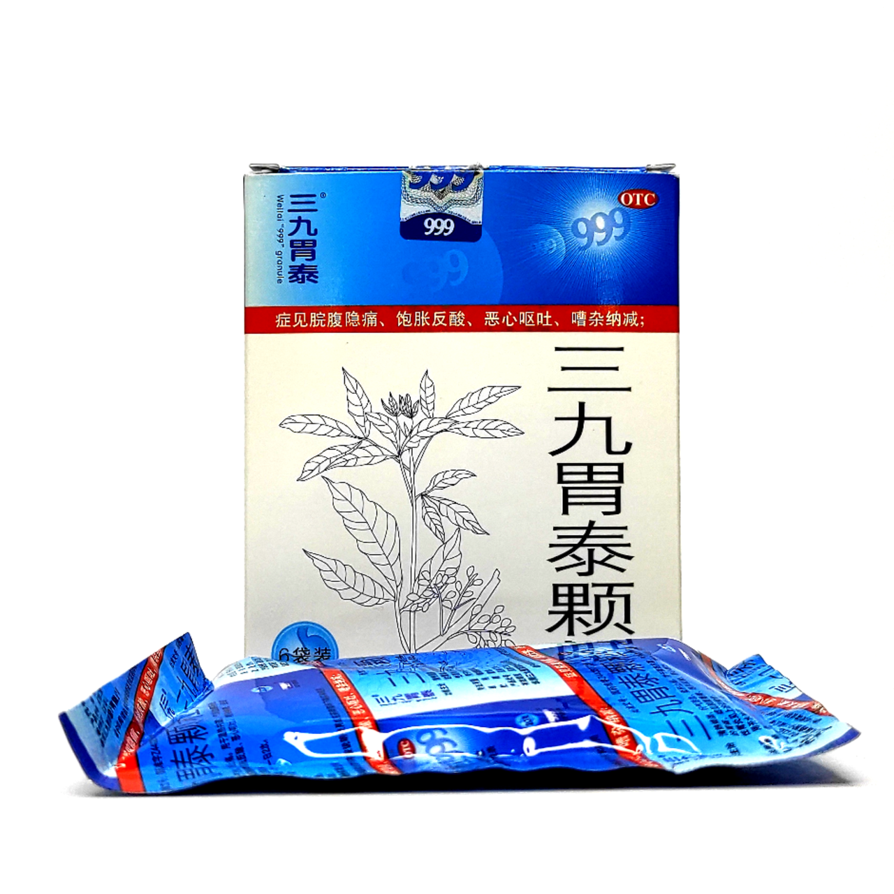
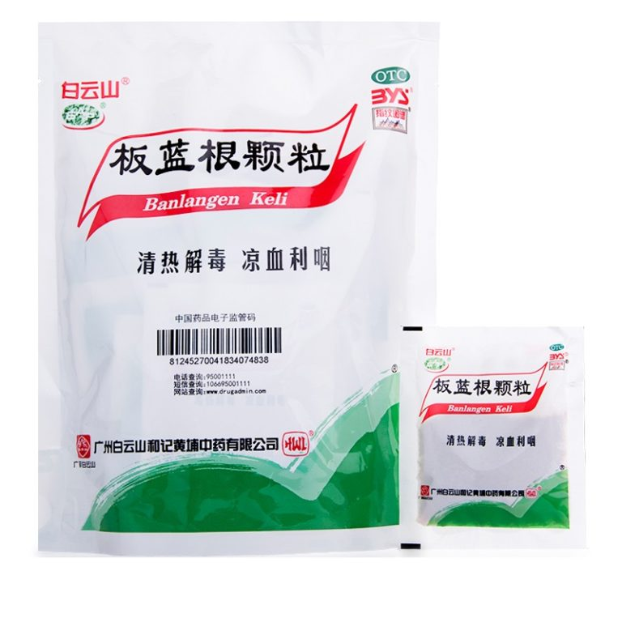
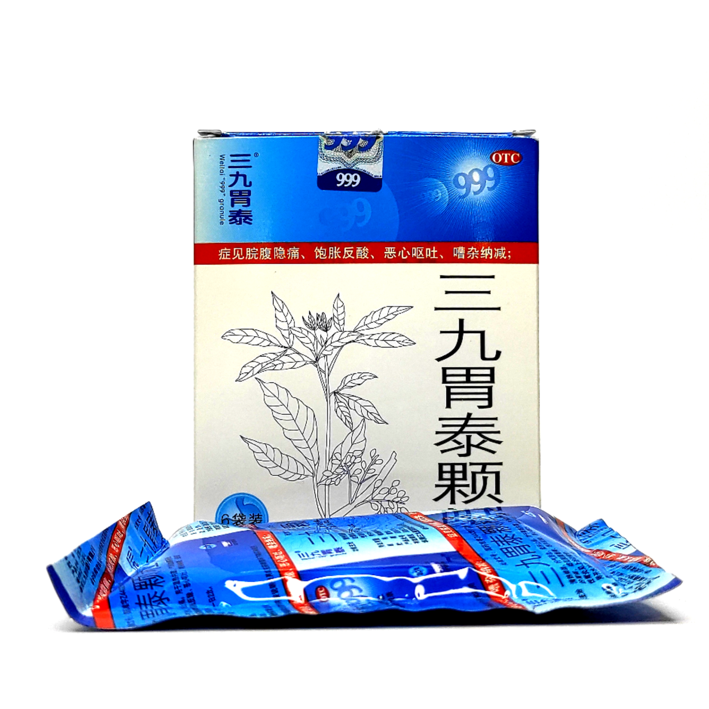
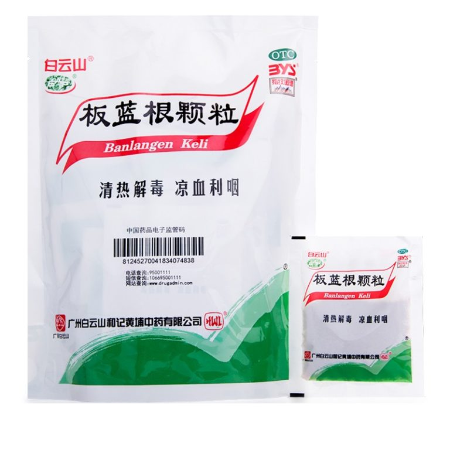
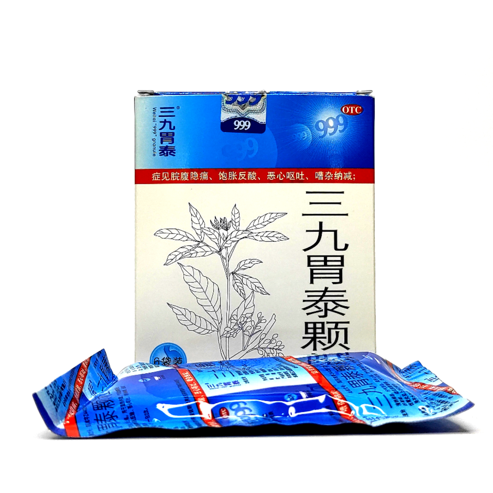

Добро пожаловать на страницу о чае!

О чае:
Чай — напиток, приготовленный с использованием заваривания сушеных листьев чайного куста. Он является одним из наиболее распространенных напитков в мире и имеет разнообразные вкусы и ароматы.
Виды чая:
- Зеленый чай
- Черный чай
- Белый чай
- Улун
Польза чая:
Чай обладает антиоксидантными свойствами, помогает расслабиться и улучшить пищеварение. Регулярное употребление чая может оказать положительное воздействие на организм.



 



Назад

